📑 目录
📖 系统概述
VIS OpenClaw 是一个用于监控和管理 OpenClaw 多 Agent 系统的可视化平台。
核心概念
AI 智能助手，执行具体任务
会话，与 Agent 的对话
任务，分配给 Agent 的工作
OpenClaw 网关服务
系统架构
🚀 快速开始
启动系统
- 1双击
start.bat - 2等待服务启动
- 3浏览器打开
http://localhost:3000
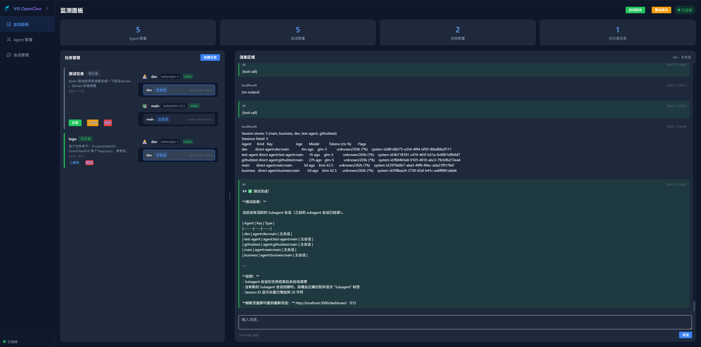
图 1.1 监测面板主界面
界面导航
左侧导航栏包含以下功能模块：
| 菜单 | 功能 |
|---|---|
| 📊 监测面板 | 查看系统状态和任务 |
| 👤 Agent 管理 | 管理智能助手 |
| 💬 会话管理 | 查看和干预会话 |
| 📄 命令配置 | OpenClaw CLI 命令参考 |
| 🎮 游戏界面 | 用地图和虚拟形象观察任务、Agent 和协作状态 |
| 🗺️ 游戏界面编辑 | 创建地图、预览场景、管理单位与环境素材 |
🎮 V1.1 更新亮点
V1.1 的核心目标 是把 OpenClaw 的 Agent 协作过程从“列表和日志”升级为“可观察、可理解、可互动的任务现场”。新版在保留监测面板、Agent 管理和会话管理能力的基础上，新增游戏界面、地图编辑器、地图预览、单位演示和环境素材管理，让任务分发、Agent 响应和协作关系以更直观的方式呈现。
对于日常使用者，这意味着可以在同一个产品中完成任务创建、任务分发、Agent 会话跟踪和视觉化验收；对于调试人员，则可以更快定位“任务是否发出、Agent 是否响应、视觉状态是否同步”等关键问题。
任务分发后同步进入 OpenClaw Agent 会话，并在 VIS 游戏界面中形成可观察的任务现场。
Agent、任务、建筑和环境元素被放置在同一张地图中，便于观察任务关系和协作位置。
支持地图尺寸、地形、环境元素、单位资源、保存、导入、导出和预览，便于构建不同演示场景。
新增战斗单位、资源单位、怪物、建筑、树木、石块、灌木和水域等素材展示，提升虚拟 Agent 的表现力。
1. OpenClaw × VIS 联动
新版将 OpenClaw 会话窗口与 VIS 游戏界面放在同一个工作流中理解：左侧是 Agent 实际收到的任务消息和工具调用过程，右侧是 VIS 对同一任务现场的可视化表达。用户可以同时确认“消息是否进入 Agent 会话”和“游戏界面是否同步展示任务与 Agent 动作”。

图 V1.1-1 OpenClaw 会话与 VIS 游戏界面联动
在 VIS 中创建并分发任务后，系统会将任务内容写入目标 Agent 的 OpenClaw 会话窗口，同时在游戏界面生成任务虚拟形象，帮助用户确认任务已经到达正确对象。
Agent 在 OpenClaw 中的回复、工具调用和任务处理过程，可以与 VIS 中的 Agent 动作和任务状态并行观察，减少只看单一日志带来的误判。
直接在 Agent 会话框聊天时，虚拟 Agent 主要在原地做响应动作；从任务管理分发任务时，Agent 会移动到任务虚拟形象附近执行动作，用视觉行为区分“聊天响应”和“任务执行”。
2. 游戏界面
游戏界面是 V1.1 最重要的新增入口。它把当前任务、参与 Agent、任务虚拟形象和地图环境放在一个可拖动、可缩放的画布中，适合做实时演示、任务验收和协作关系观察。
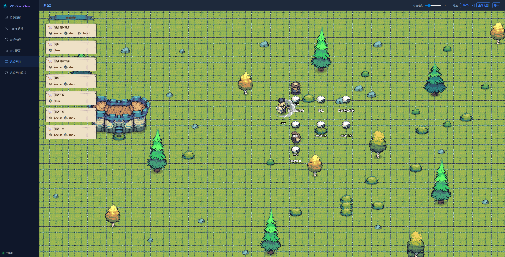
图 V1.1-2 游戏界面中的任务、Agent 与地图现场
核心能力
| 能力 | 产品价值 |
|---|---|
| 当前任务列表 | 在地图左侧集中展示任务名称与参与 Agent，便于快速定位正在处理的工作。 |
| 虚拟 Agent 行为 | 通过站立、移动、交互等动作表达 Agent 当前状态，使任务处理过程更容易被观察。 |
| 任务虚拟形象 | 任务在地图上具象化展示，分发后 Agent 会围绕任务点展开动作，强化任务归属关系。 |
| 缩放与拖动 | 支持不同缩放比例和地图拖动，在大地图下也能快速查看全部区域或聚焦局部现场。 |
使用建议：验收任务分发时，建议同时观察 OpenClaw 会话窗口与 VIS 游戏界面。会话窗口用于确认 Agent 是否收到任务，游戏界面用于确认任务现场是否正确同步。
3. 地图编辑与预览
游戏界面编辑页提供地图编辑器和预览能力。地图编辑器偏向“创建和维护场景”，预览页偏向“验收和选择最终展示地图”。
地图编辑器
地图编辑器支持从空白网格开始搭建场景，也支持在已有地图上继续调整。用户可以选择网格尺寸、缩放比例和编辑工具，并使用画笔、橡皮擦、拖动、填充、清空、填充全部等操作快速完成地图构建。
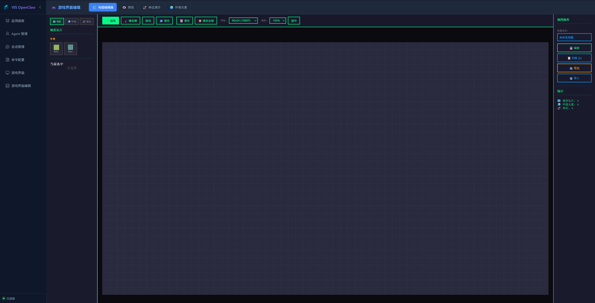
图 V1.1-3 地图编辑器基础界面
完成地形和环境布置后，右侧面板会显示地图名称、保存、列表、导出、导入和统计信息。统计信息可以帮助用户确认当前地图中地形、环境元素和单位数量是否符合预期。
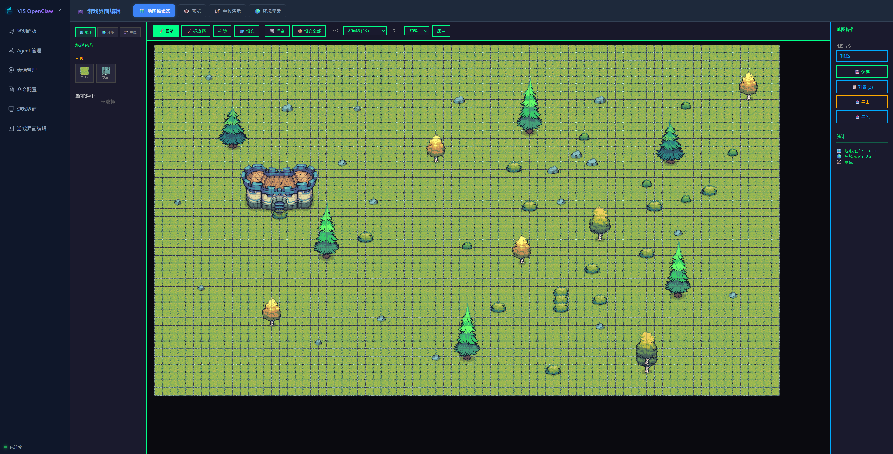
图 V1.1-4 完成地形和环境布置后的地图编辑器
地图预览
预览页用于检查已保存地图的实际展示效果。左侧可以切换已保存地图，并选择哪张地图用于游戏界面；中间区域提供缩放、拖动和居中能力；右侧显示地图尺寸、地形数量、环境元素数量和单位数量。
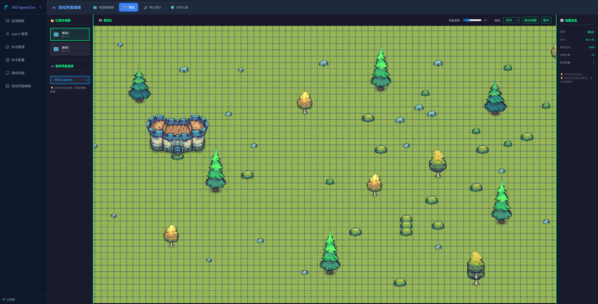
图 V1.1-5 地图预览与游戏界面地图选择
推荐流程
- 在「地图编辑器」中选择地图尺寸和基础地形。
- 使用环境元素和单位素材搭建演示场景。
- 保存地图，并在「预览」中检查比例、中心位置和完整度。
- 在预览页选择该地图作为游戏界面地图。
- 回到「游戏界面」进行任务分发和 Agent 行为验收。
4. 单位与环境素材
V1.1 接入了更丰富的 Tiny Swords 风格资源，为虚拟 Agent 和地图环境提供更完整的视觉素材基础。素材展示页不仅用于浏览资源，也用于检查动作帧、缩放比例和动效速度。
素材来源说明：本版本游戏化界面使用了 Pixel Frog 的 Tiny Swords 免费部分素材，覆盖单位动画、建筑、地形、环境装饰和部分游戏化 UI 元素。项目仅使用 Free Pack；素材可用于项目展示和二次开发，但不得作为独立素材包重新分发、转售或重新打包。完整说明见 ASSET_CREDITS.md。
单位演示
单位演示页按角色类型展示动作资产，包括弓箭手、战士、枪骑兵、僧侣和工人等。每类单位支持不同的站立、奔跑、攻击、防御、治疗或资源携带动作，为后续 Agent 形象差异化提供素材基础。
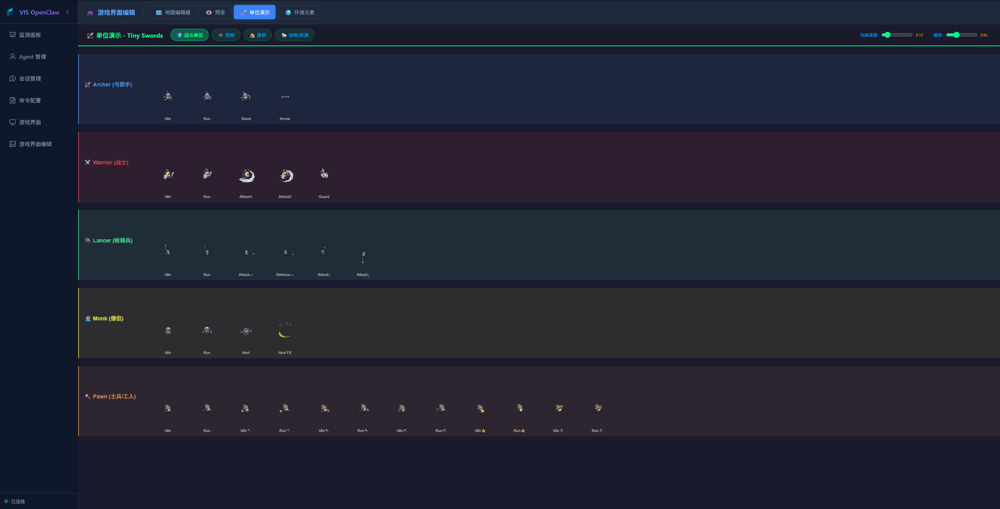
图 V1.1-6 单位演示与动作资产
环境元素
环境元素页展示树木、石块、灌木和水域等地图素材。通过这些元素，用户可以把任务现场从单一网格扩展为更接近真实场景的空间，提升演示的辨识度和沉浸感。
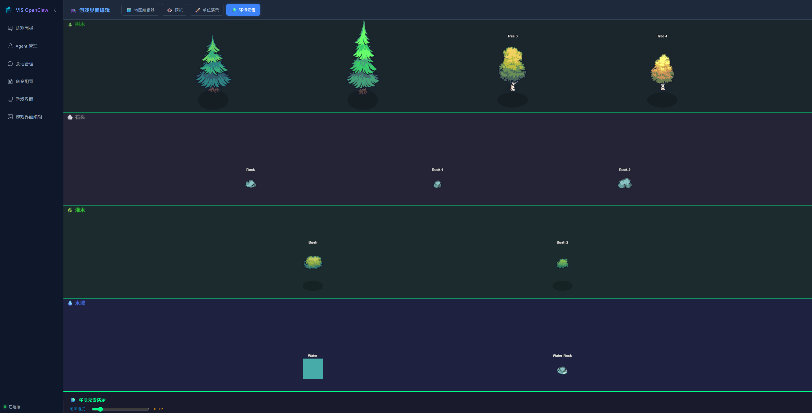
图 V1.1-7 环境元素素材展示
🛠️ 功能详解
1. 监测面板
监测面板是主界面，显示系统整体状态。
图 3.1 监测面板
状态指标
| 指标 | 说明 |
|---|---|
| Agent 数量 | 当前配置的 Agent 总数 |
| 会话数量 | 活跃会话数 |
| 任务数量 | 已创建的任务数 |
| 已分发任务 | 已分发给 Agent 的任务数 |
创建任务
- 点击「创建任务」按钮
- 填写任务名称和描述
- 在描述中使用
@agent名提及 Agent - 点击创建
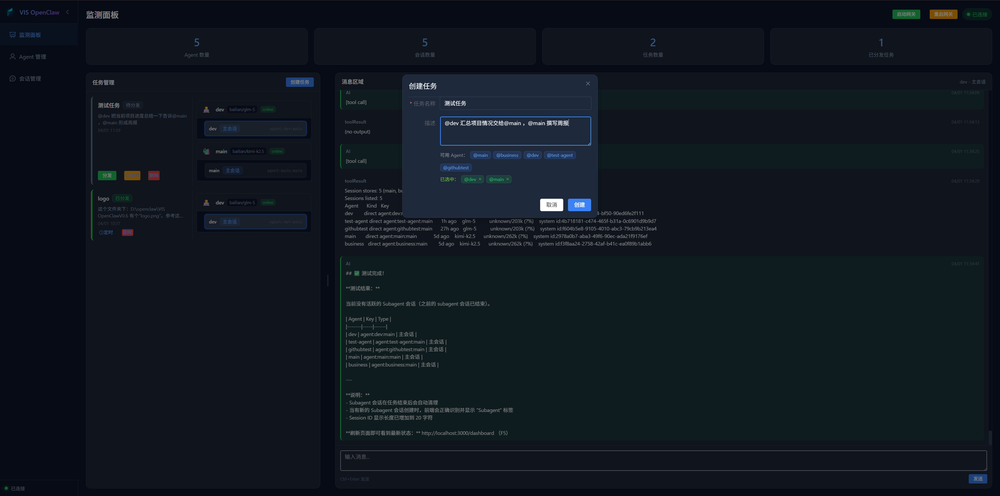
图 3.2 创建任务
分发任务
- 找到待分发的任务卡片
- 点击「分发」按钮
- 系统将任务发送给相关 Agent
定时任务
- 点击任务卡片的「定时」按钮
- 设置定时模式：
- 间隔启动：每隔 N 分钟/小时启动
- 定点启动：每天固定时间启动
- 保存配置
任务状态
| 状态 | 说明 |
|---|---|
| 待分发 | 任务已创建，等待分发 |
| 已暂停 | 任务尚未分发，可恢复后再分发 |
| 定时 | 任务已设置定时 |
| 分发中 | 系统已接受分发请求，正在写入 Agent 会话 |
| 已分发 | 任务已发送给 Agent |
| 处理中 | Agent 会话正在处理任务 |
| 已完成 | 关联 Agent 会话已完成本轮处理 |
| 失败 | 任务分发或会话处理失败 |
| 状态待确认 | Agent 会话状态暂时无法确认，需要刷新或等待 Gateway 恢复 |
任务一旦进入「分发中」「已分发」或「处理中」，状态就由 OpenClaw 会话桥接链路接管，不再支持暂停；如果需要调整任务，请创建新任务或在 OpenClaw 会话侧处理。
2. Agent 管理
管理 OpenClaw 的智能助手。
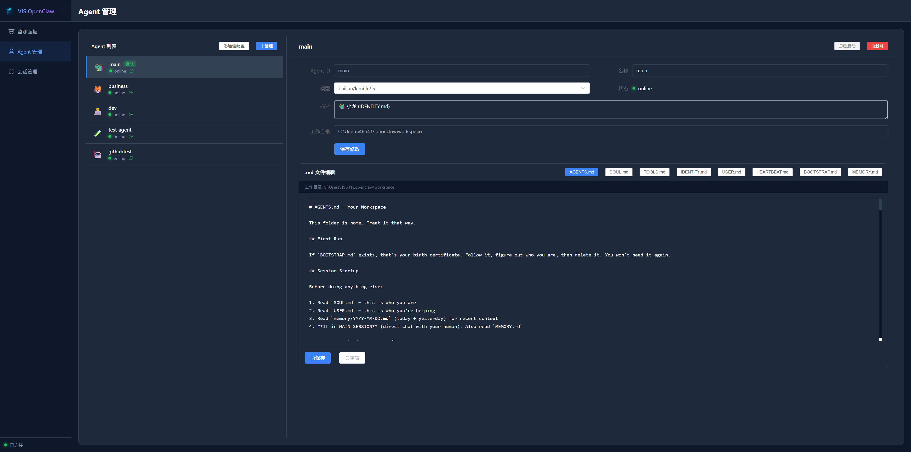
图 3.3 Agent 管理
Agent 列表
显示所有 Agent 及其状态：
| 信息 | 说明 |
|---|---|
| 头像/Emoji | Agent 的标识 |
| 名称 | Agent 名称 |
| 模型 | 使用的 AI 模型 |
| 状态 | 在线/离线 |
创建 Agent
- 点击「创建 Agent」
- 填写基本信息
- 选择 AI 模型
- 编辑配置文件
- 保存
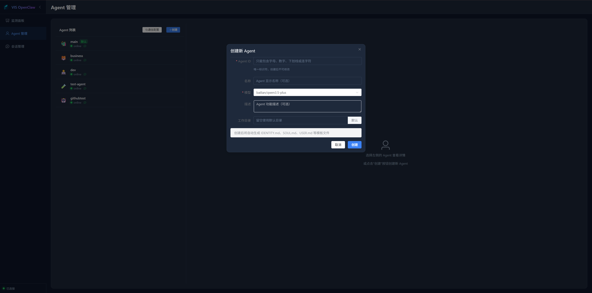
图 3.4 创建 Agent
编辑配置文件
每个 Agent 有 8 个配置文件：
| 文件 | 用途 |
|---|---|
| IDENTITY.md | 身份定义 |
| SOUL.md | 核心价值观 |
| USER.md | 用户/团队信息 |
| AGENTS.md | 工作流程 |
| MEMORY.md | 长期记忆 |
| TOOLS.md | 工具配置 |
| HEARTBEAT.md | 定期检查 |
| BOOTSTRAP.md | 首次启动 |
Agent 通信配置
配置 Agent 之间的通信权限：
- 选择要配置的 Agent
- 在「通信配置」中选择允许通信的 Agent
- 保存配置
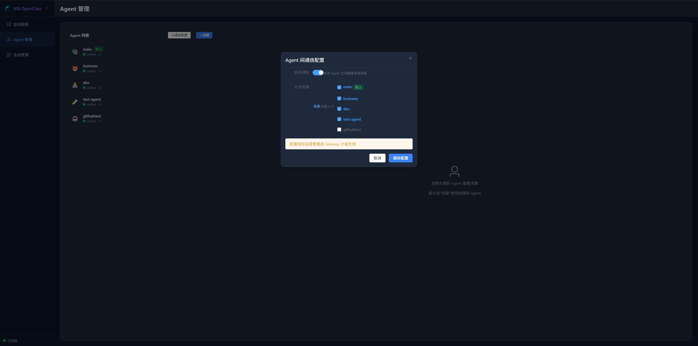
图 3.5 Agent 通信配置
3. 会话管理
查看和管理所有会话。
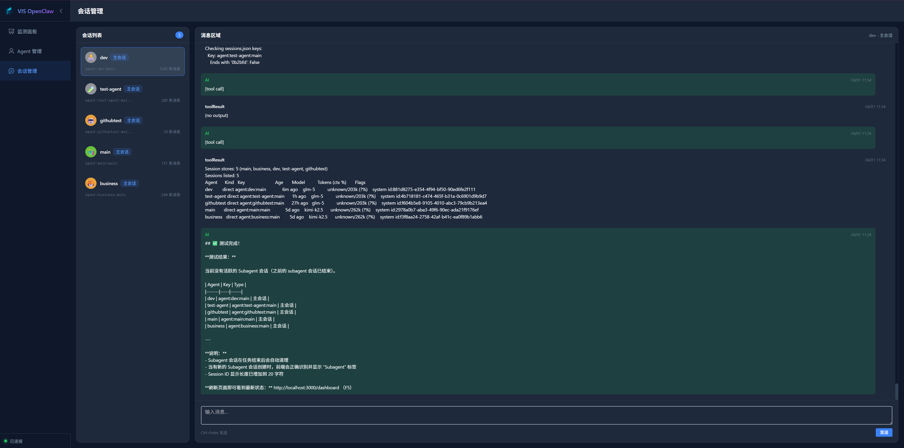
图 3.6 会话管理
会话列表
左侧显示所有会话：
| 信息 | 说明 |
|---|---|
| Agent 名称 | 所属 Agent |
| 类型 | 主会话/Subagent |
| 会话 ID | 会话唯一标识 |
| 消息数 | 会话消息数量 |
消息区域
右侧显示选中会话的消息历史：
- 用户消息（蓝色）
- AI 回复（绿色）
发送消息
- 选择会话
- 在底部输入框输入消息
- 按 Ctrl+Enter 或点击「发送」
4. 命令配置
OpenClaw CLI 命令参考手册。
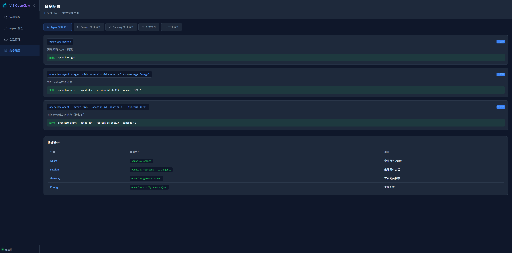
图 3.7 命令配置
按分类浏览所有命令，支持一键复制。
❓ 常见问题
Q: 如何停止服务？
运行 stop.bat 或关闭命令行窗口。
Q: 网关显示未连接？
- 确认 OpenClaw 已安装
- 点击「启动网关」按钮
- 检查 Gateway 服务状态
Q: Agent 显示离线？
- 检查 Agent 配置是否正确
- 确认 Gateway 服务运行中
- 尝试重启 Gateway
Q: 任务分发失败？
- 确认目标 Agent 在线
- 检查 Agent 通信配置
- 查看 Agent 配置文件格式
Q: 消息发送失败？
- 确认会话是活跃状态
- 检查后端服务是否正常
- 查看浏览器控制台错误